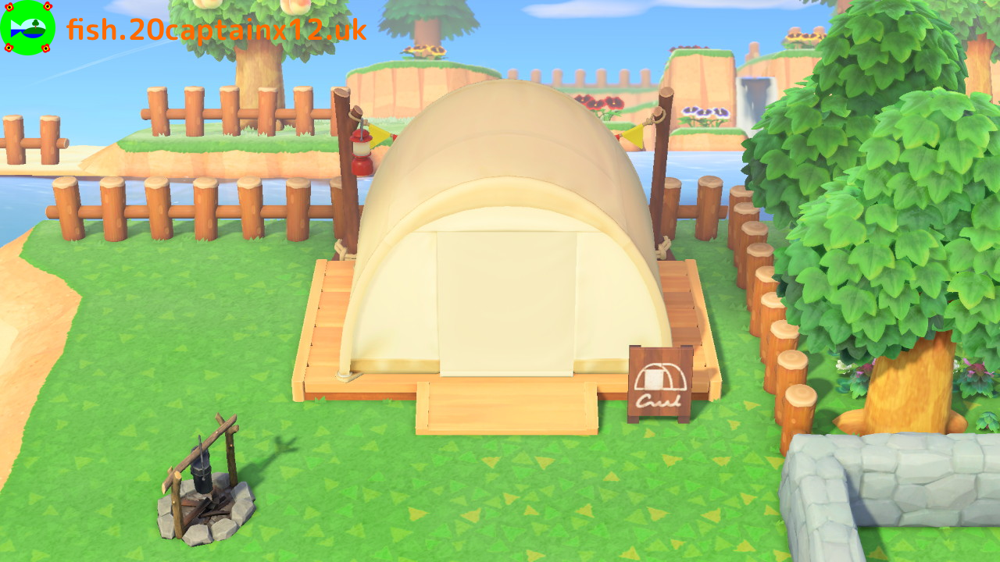

Fish
Fish00:00
20/3/2020Fish is an island in Animal Crossing: New Horizons
Fish's rating is: ★★★★★
Fish's Dream Address is: DA-4020-8613-4299
| Xander |
| Shari |
| Poncho |
| Zucker |
| Marina |
| Aurora |
| Zell |
| Hamphrey |
| Diana |
| Pippy |
| Biff |

The Town Hall
NOTICE: Fish's Dream Address is now available! Check the top of our site for details.
If you are interested, feel free to follow and contact our Twitter
• Fish's official language is English(UK)
• There are no documented cases of COVID-19 in Fish. (This joke aged badly)
• Fish does not offer medical insurance, or any other healthcare facilities for that matter.
• Fish is a secret territory administered by the United Kingdom with Their Excellency Xander as governor.
• Fish won't eat you.
|  | ||
03/05/2020: Honestly, I don't like updating this bit. Fish now has five stars. This part of the site gave me something to do before ACNH came out, but now that the game is out, I don't really want to keep updating this part. My apologies for this, but updates from now on would be scarce. My twitter should be able to keep you up-to-date, if you are interested.

07/04/2020:Woah, I have been neglectful! Okay, so I have been playing ACNH non-stop, but now this site has it's own domain! It is hosted by Github Pages now instead of Neocities, and setting up the domain took some effort. But all is good now!
Fish is currently undergoing the bunny day event as well as having trees blossom. We also have a town of 11 residents (including me) and four stars.


24/03/2020: Anabelle moved in today. Zucker also finished unpacking from moving in yesterday.


22/03/2020: This game has absorbed me. I haven't gotten the chance to update the site. Fish has been established. We plan for our museum to open tomorrow and to welcome three new residents! Today we opened Nook's Cranny. I will like to share some pictures, if you don't mind :)


 12/03/2020: 8 days remain! My friend @dragoon.chi made a new background for the visiting section :)
12/03/2020: 8 days remain! My friend @dragoon.chi made a new background for the visiting section :)
10/03/2020: 10 days remain! I added a new trailer to the videos up top :)
05/03/2020: I added another cursor for hovering over text. There really isn't much more I wish to add here for now, to be honest. I will need to wait until I start developing my island in Animal Crossing: New Horizons.
04/03/2020: I had to reset the comment section. My apologies for that. I have also added a custom cursor! It is the one used in Animal Crossing: Let's Go To The City!
03/03/2020: I added a bulletin board! It is essentially a comments section. Leave a message!
02/03/2020: I updated the background to this section, making it into a stone paving from the previous brick pattern. Clicking the top buttons now has an animation to go to the sections, but it is only supported on major browsers. I also updated the font to show sans-serif if getting the google font isn't viable.
I added the residents table.
01/03/2020: The three sections of the website have been developed.
29/02/2020: The website was established today.
Bulletin board
Feel free to leave a comment on our bulletin board!